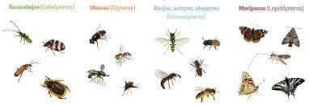

Polinización entomófila: llevada a cabo por insectosProceso de polinizaciónpolinizadores. Dentro de este grupo se encuentran los himenópteros (abejas, abejorros, hormigas y avispas), coleópteros (escarabajos), que poseen mandíbulas masticadoras con mucha fuerza, dípteros (moscas) y lepidópteros (mariposas y polillas). Los himenópteros prefieren plantas con grandes cantidades de polen y/o néctar, que se encuentre accesible. Los coleópteros actúan sobre flores cantarófilas. Las preferencias de los dípteros son flores de pequeño tamaño sin olor. Por último, los lepidópteros se decantan por flores grandes, con forma de tubo alargado, donde pueden acceder al néctar gracias a su característico aparato bucal.
Polinización ornitófila: polinización cruzada realizada por la intervención de aves
Polinización zoófila: se da como consecuencia de la acción de animales polinizadores.
Polinización anemófila: forma parte de la polinización de tipo abiótico, puesto que el agente que actúa es el aire o el viento. Se da fundamentalmente en coníferas o gramíneas, las cuales producen grandes cantidades de polen de peso reducido, de manera que puedan flotar con el viento. Estas especies suelen tener largos estambres y pistilos.
Polinización hidrófila: producida por el agua, aunque no es un mecanismo muy extendido.
Tomado de:(https://innovatione.eu/2019/06/17/polinizacion/)
